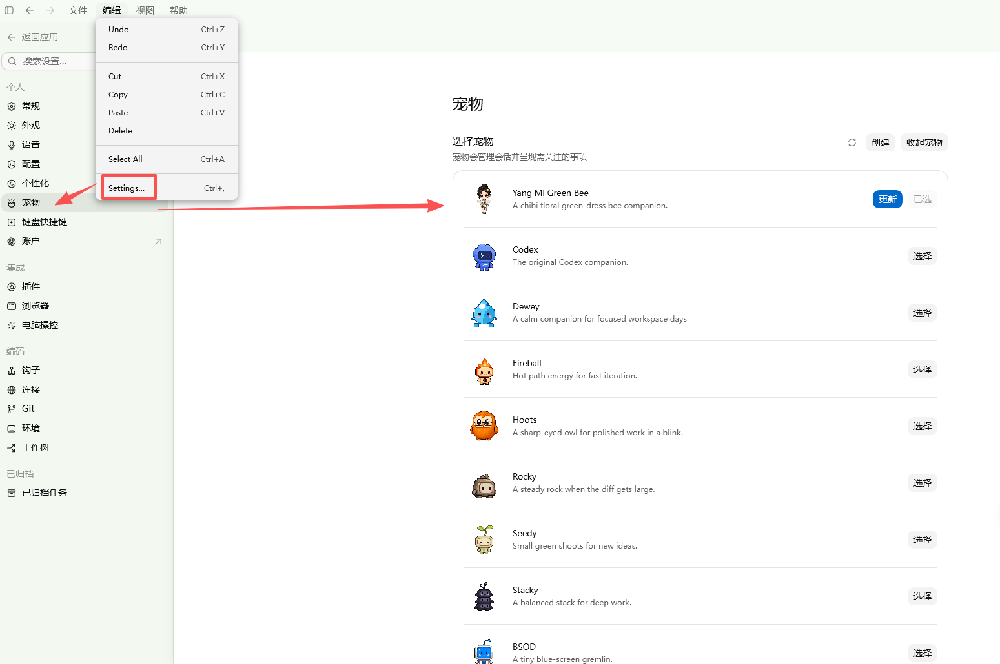

WHY THIS PROJECT
先看三件最重要的事
GET STARTED
没用过 AI，也能照着完成
先从 OpenAI 官方渠道下载安装并登录 Codex 桌面端，再下载本项目压缩包。解压后不要移动文件夹内的内容。
Windows
- 下载、解压项目。
- 双击
pet-package/windows/Install-杨幂绿蜂宠物.cmd安装宠物。 - 打开
skin-package/windows/，双击喜欢的Apply-*.cmd应用皮肤。 - 重启 Codex，完成后到“宠物”页选择杨幂绿蜂。
macOS
- 下载、解压项目。
- 打开“终端”，进入项目根目录。
zsh pet-package/macos/install-yangmi-green-bee-pet.zsh
zsh skin-package/macos/apply-yang-mi-skin.zsh woodland-white --restart-existing重启 Codex，完成后到“宠物”页选择杨幂绿蜂。
ONE MORE STEP
安装后，要在设置里选中宠物
重启 Codex 后，打开 编辑 → Settings… → 宠物（Pets），找到 Yang Mi Green Bee，点击“选择”。

CLEAR BOUNDARIES
本项目的边界与恢复方式
YangMi Codex Skin 是一个开源项目包：皮肤、背景、宠物和安装脚本都放在仓库中，在你的电脑上手动运行；不需要额外常驻客户端，也不依赖本站持续在线。
本地脚本如何工作
- 下载项目后，按 Windows 或 macOS 的入口手动运行。
- 皮肤、背景和宠物包均保存在你的本地目录。
- 仅通过本机
127.0.0.1调试接口作用于当前 Codex 会话。 - 换背景、切换主题与选择宠物都可以分别完成。
边界清楚，随时恢复
- 不修改 Codex 的
WindowsApps、app.asar或官方安装包。 - 不会读取或上传你的项目、聊天内容和账号信息。
- 使用前保存草稿；不再使用时运行恢复脚本。
- 这是独立的粉丝制作项目，与 OpenAI 或杨幂官方无隶属、授权或背书关系。
THEME REFERENCES
当前收录的四张主题参考图
页面不把临时风格词当作海报出处。欢迎补充每张图片的正式出处后，再更新为准确标题。
ANIMATED COMPANION
它不只是站在右下角
左右拖动、悬停互动、执行任务与等待输入，都使用对应的宠物状态帧。
 微信公众号宁的AI小站 · 悬停或点按查看二维码QR
微信公众号宁的AI小站 · 悬停或点按查看二维码QR
微信搜索「宁的AI小站」
小红书GoodTime · 效果图、宠物动效与发布动态
↗GitHub下载项目、查看更新、提交反馈
↗投稿与定制主题投稿、其他明星皮肤定制需求
↗